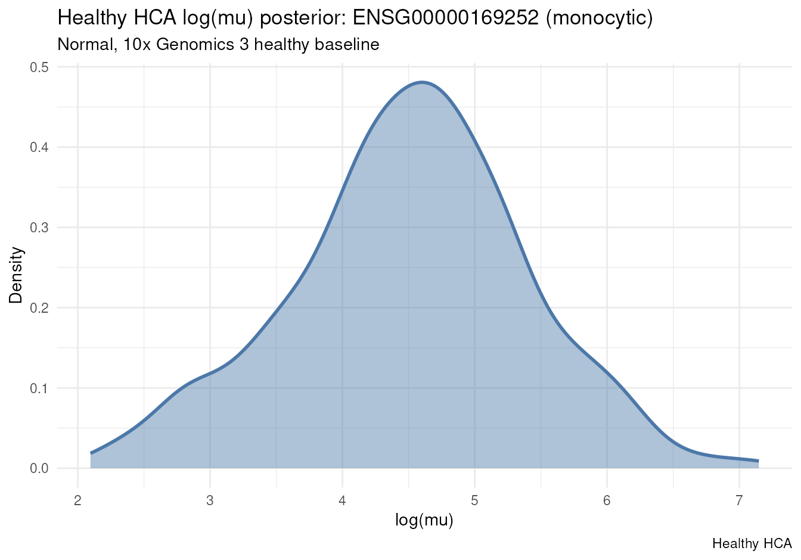
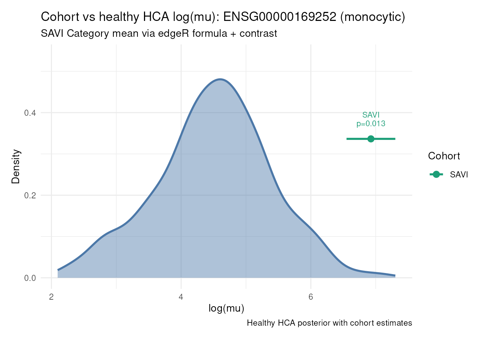

cohort-expression-core.RmdSAVI case study: ADRB2 (ENSG00000169252) in
disease-associated monocytes.
posteriorHCA compares a user-supplied mean estimate and
SE to an HCA posterior mean and SE via
welch_test_means(). The optional edgeR helper
estimate_ql() fits a covariate-aware NB QL model and
extracts a user-defined fitted expression quantity
(estimate + se). Any other valid statistical
model that produces a comparable estimate and SE can be used
instead.
This vignette writes the steps explicitly. The concise one-hot
wrapper path is
vignette("cohort-expression-wrappers", package = "posteriorHCA").
Workflow:
formula), then
extract a target expression estimand (contrast) and SElog(E_HCA)
welch_test_means()
data(savi_mono)
user_counts <- as.matrix(Seurat::GetAssayData(savi_mono, layer = "counts"))
mapped <- AnnotationDbi::mapIds(
org.Hs.eg.db,
keys = rownames(user_counts),
column = "ENSEMBL",
keytype = "SYMBOL",
multiVals = "first"
)
keep <- !is.na(mapped) & !duplicated(mapped)
user_counts <- user_counts[keep, , drop = FALSE]
rownames(user_counts) <- unname(mapped[keep])
sample_metadata <- data.frame(
Category = factor(savi_mono$Category[colnames(user_counts)]),
Experiment = factor(savi_mono$Experiment[colnames(user_counts)]),
row.names = colnames(user_counts),
stringsAsFactors = FALSE
)
dim(user_counts)
#> [1] 17116 17
table(sample_metadata$Category, sample_metadata$Experiment)
#>
#> EXP1 EXP2 EXP3
#> CTRL 3 2 2
#> SAVI 2 2 1
#> SAVI_treated 3 2 0Joint TMM / TMMwsp puts user and HCA effective library sizes on one
scale. edgeR is then fitted on user libraries only with
offset log(effective library size).
reference <- load_reference_sample(cell_type)
combined_counts <- merge_with_reference_sample(
user_counts,
reference = reference$counts,
reference_name = reference$sample_id
)
scaling <- calculate_tmm_scaling(
combined_counts,
reference_name = reference$sample_id
)
user_offset <- scaling$log_effective_library_size[colnames(user_counts)]estimate_ql() is an estimation helper,
not differential-expression testing. The formula controls
which effects enter the NB QL model (for example Category and
Experiment). The contrast selects which fitted expression
quantity to extract:
estimate = c' beta
SE = sqrt(c' Var(beta) c)posteriorHCA does not interpret the contrast and does not invent a unique “batch-adjusted mean”; the user owns that estimand. Return value:
gene, contrast, estimate, se, dfestimate is natural-log edgeR scale
(log(mu) = X beta + offset), not DE-table log2
logFC, and not automatically named log_mu.
estimate_ql() follows the current edgeR v4 QL workflow,
using the NB dispersion estimated internally by glmQLFit()
together with gene-specific moderated quasi-dispersions. Earlier edgeR
QL workflows commonly used trended NB dispersions estimated with
estimateDisp(); we currently treat that as a
sensitivity-analysis alternative. ### Simple group mean
Under ~ 0 + Category, CategorySAVI is an
absolute normalized group mean under that parameterisation.
savi_est <- estimate_ql(
counts = user_counts,
offset = user_offset,
metadata = sample_metadata,
formula = ~ 0 + Category,
contrast = "CategorySAVI"
)
savi_est <- savi_est[savi_est$gene == gene_ensg, , drop = FALSE]
savi_est
#> gene contrast estimate se df
#> 3946 ENSG00000169252 CategorySAVI -8.207553 0.3762088 19.06436Because this contrast is an absolute mean, add the fixed HCA constant for comparison on the matched reference scale. SE is unchanged.
user_log_mu <- savi_est$estimate + scaling$hca_log_effective_library_size
user_se <- savi_est$se
n_savi <- sum(sample_metadata$Category == "SAVI")
c(log_mu = user_log_mu, se = user_se, n = n_savi)
#> log_mu se n
#> 6.9269402 0.3762088 5.0000000Fit Category while including Experiment in the model. Different contrasts select different fitted conditions of the same model — neither is the unique “correct” adjusted mean.
exp2 <- paste0("Experiment", levels(sample_metadata$Experiment)[[2]])
# Absolute estimands: SAVI at reference Experiment vs SAVI at EXP2
batch_fit <- estimate_ql(
counts = user_counts,
offset = user_offset,
metadata = sample_metadata,
formula = ~ 0 + Category + Experiment,
contrast = c(
"CategorySAVI",
paste("CategorySAVI +", exp2)
)
)
batch_fit <- batch_fit[batch_fit$gene == gene_ensg, , drop = FALSE]
batch_fit
#> gene contrast estimate se
#> 3946 ENSG00000169252 CategorySAVI -9.950765 0.4974378
#> 21062 ENSG00000169252 CategorySAVI + ExperimentEXP2 -7.901864 0.3239370
#> df
#> 3946 12.27496
#> 21062 12.27496These are absolute fitted quantities, so add the fixed HCA constant for comparison (SE unchanged), the same as in the simple group-mean case.
batch_fit$log_mu <- batch_fit$estimate + scaling$hca_log_effective_library_size
batch_fit[, c("gene", "contrast", "estimate", "log_mu", "se")]
#> gene contrast estimate log_mu
#> 3946 ENSG00000169252 CategorySAVI -9.950765 5.183728
#> 21062 ENSG00000169252 CategorySAVI + ExperimentEXP2 -7.901864 7.232629
#> se
#> 3946 0.4974378
#> 21062 0.3239370A relative contrast does not get the HCA shift: if
both group means were shifted by the same log(E_HCA), that
constant would cancel in the difference. Use estimate /
se as returned.
hca_const <- scaling$hca_log_effective_library_size
rel_fit <- estimate_ql(
counts = user_counts,
offset = user_offset,
metadata = sample_metadata,
formula = ~ 0 + Category + Experiment,
contrast = c(
"CategorySAVI",
"CategoryCTRL",
"CategorySAVI - CategoryCTRL"
)
)
rel_fit <- rel_fit[rel_fit$gene == gene_ensg, , drop = FALSE]
rel_fit
#> gene contrast estimate se df
#> 3946 ENSG00000169252 CategorySAVI -9.950765 0.4974378 12.27496
#> 21062 ENSG00000169252 CategoryCTRL -13.255421 0.6515197 12.27496
#> 38178 ENSG00000169252 CategorySAVI - CategoryCTRL 3.304656 0.5183783 12.27496
est <- setNames(rel_fit$estimate, rel_fit$contrast)
# Absolute means may be HCA-shifted; their difference is unchanged.
c(
relative_contrast = unname(est[["CategorySAVI - CategoryCTRL"]]),
log_mu_CategorySAVI = est[["CategorySAVI"]] + hca_const,
log_mu_CategoryCTRL = est[["CategoryCTRL"]] + hca_const,
difference_of_hca_shifted_absolutes =
(est[["CategorySAVI"]] + hca_const) - (est[["CategoryCTRL"]] + hca_const)
)
#> relative_contrast log_mu_CategorySAVI
#> 3.304656 5.183728
#> log_mu_CategoryCTRL difference_of_hca_shifted_absolutes
#> 1.879072 3.304656
expression_fit <- load_expression_fit(
cell_type = cell_type,
gene_ensg = gene_ensg
)
newdata <- build_newdata_grid(
expression_fit,
disease_groups = "Normal",
tissue_groups = "blood",
assay_groups = "10x Genomics 3"
)
posterior_draws <- expression_draws(
expression_fit,
newdata = newdata,
quantity = "linpred",
collapse = "mean"
)welch_test_means() only needs two means and two SEs on
the same scale. Here we compare the simple SAVI group mean (HCA-shifted)
to the HCA baseline. Estimates from outside posteriorHCA can be passed
the same way.
posterior_summary <- summarize_posterior_draws(
posterior_draws,
value = user_log_mu
)
welch_test_means(
mu1 = user_log_mu,
se1 = user_se,
mu2 = posterior_summary$log_mu,
se2 = posterior_summary$se,
n1 = n_savi,
n2 = posterior_summary$n
)
#> $mu1
#> [1] 6.92694
#>
#> $se1
#> [1] 0.3762088
#>
#> $n1
#> [1] 5
#>
#> $mu2
#> [1] 4.503811
#>
#> $se2
#> [1] 0.8879115
#>
#> $n2
#> [1] 400
#>
#> $delta
#> [1] 2.423129
#>
#> $se_diff
#> [1] 0.9643235
#>
#> $t_stat
#> [1] 2.512776
#>
#> $df
#> [1] 131.7077
#>
#> $p_value
#> [1] 0.0131852
test <- welch_test_means(
mu1 = user_log_mu,
se1 = user_se,
mu2 = posterior_summary$log_mu,
se2 = posterior_summary$se,
n1 = n_savi,
n2 = posterior_summary$n
)
test_results <- data.frame(
group = "SAVI",
n = n_savi,
log_mu = test$mu1,
se = test$se1,
hca_log_mu = test$mu2,
hca_se = test$se2,
p_value = test$p_value,
stringsAsFactors = FALSE
)
test_results
#> group n log_mu se hca_log_mu hca_se p_value
#> 1 SAVI 5 6.92694 0.3762088 4.503811 0.8879115 0.0131852
plot_hca_draws(
draws = posterior_draws,
subtitle = "Normal, 10x Genomics 3 healthy baseline"
)
plot_cohort_vs_hca(
hca_draws = posterior_draws,
cohort_est = test_results,
subtitle = "SAVI Category mean via edgeR formula + contrast",
annotate = c("group", "p_value")
)
sessionInfo()
#> R version 4.6.1 (2026-06-24)
#> Platform: x86_64-pc-linux-gnu
#> Running under: Ubuntu 24.04.4 LTS
#>
#> Matrix products: default
#> BLAS: /usr/lib/x86_64-linux-gnu/openblas-pthread/libblas.so.3
#> LAPACK: /usr/lib/x86_64-linux-gnu/openblas-pthread/libopenblasp-r0.3.26.so; LAPACK version 3.12.0
#>
#> locale:
#> [1] LC_CTYPE=en_US.UTF-8 LC_NUMERIC=C
#> [3] LC_TIME=en_US.UTF-8 LC_COLLATE=en_US.UTF-8
#> [5] LC_MONETARY=en_US.UTF-8 LC_MESSAGES=en_US.UTF-8
#> [7] LC_PAPER=en_US.UTF-8 LC_NAME=C
#> [9] LC_ADDRESS=C LC_TELEPHONE=C
#> [11] LC_MEASUREMENT=en_US.UTF-8 LC_IDENTIFICATION=C
#>
#> time zone: UTC
#> tzcode source: system (glibc)
#>
#> attached base packages:
#> [1] stats4 stats graphics grDevices utils datasets methods
#> [8] base
#>
#> other attached packages:
#> [1] org.Hs.eg.db_3.23.1 AnnotationDbi_1.75.2 IRanges_2.47.5
#> [4] S4Vectors_0.51.9 Biobase_2.73.2 BiocGenerics_0.59.12
#> [7] generics_0.1.4 Seurat_5.5.1 SeuratObject_5.4.0
#> [10] sp_2.2-3 posteriorHCA_0.2.0 testthat_3.3.2
#>
#> loaded via a namespace (and not attached):
#> [1] RcppAnnoy_0.0.23 splines_4.6.1
#> [3] later_1.4.8 tibble_3.3.1
#> [5] polyclip_1.10-7 brms_2.23.0
#> [7] fastDummies_1.7.6 lifecycle_1.0.5
#> [9] StanHeaders_2.39.1 edgeR_4.99.4
#> [11] rprojroot_2.1.1 vroom_1.7.1
#> [13] processx_3.9.0 sccomp_2.5.0
#> [15] globals_0.19.1 lattice_0.23-1
#> [17] MASS_7.3-66 backports_1.5.1
#> [19] magrittr_2.0.5 limma_3.99.0
#> [21] plotly_4.12.1 sass_0.4.10
#> [23] rmarkdown_2.32 jquerylib_0.1.4
#> [25] yaml_2.3.12 httpuv_1.6.17
#> [27] otel_0.2.0 sctransform_0.4.3
#> [29] spam_2.11-4 sessioninfo_1.2.4
#> [31] pkgbuild_1.4.8 spatstat.sparse_3.2-0
#> [33] reticulate_1.47.0 cowplot_1.2.0
#> [35] pbapply_1.7-5 DBI_1.3.0
#> [37] RColorBrewer_1.1-3 abind_1.4-8
#> [39] pkgload_1.5.3 GenomicRanges_1.65.4
#> [41] Rtsne_0.17 purrr_1.2.2
#> [43] tensorA_0.36.2.1 inline_0.3.21
#> [45] ggrepel_0.9.8 irlba_2.3.7
#> [47] listenv_1.0.0 spatstat.utils_3.2-4
#> [49] goftest_1.2-3 RSpectra_0.16-2
#> [51] spatstat.random_3.5-1 bridgesampling_1.2-1
#> [53] fitdistrplus_1.2-6 parallelly_1.48.0
#> [55] pkgdown_2.2.1 DelayedArray_0.39.6
#> [57] codetools_0.2-20 tidyselect_1.2.1
#> [59] bayesplot_1.16.0 farver_2.1.2
#> [61] matrixStats_1.5.0 spatstat.explore_3.8-2
#> [63] Seqinfo_1.3.2 jsonlite_2.0.0
#> [65] ellipsis_0.3.3 progressr_1.0.0
#> [67] ggridges_0.5.7 survival_3.8-11
#> [69] systemfonts_1.3.2 tools_4.6.1
#> [71] ragg_1.5.2 ica_1.0-3
#> [73] Rcpp_1.1.2 glue_1.8.1
#> [75] SparseArray_1.13.2 gridExtra_2.3.1
#> [77] BiocBaseUtils_1.15.1 qs2_0.3.1
#> [79] xfun_0.60 MatrixGenerics_1.25.0
#> [81] distributional_0.8.1 usethis_3.2.1
#> [83] dplyr_1.2.1 withr_3.0.3
#> [85] loo_2.10.1 instantiate_0.2.3
#> [87] fastmap_1.2.0 callr_3.8.0
#> [89] digest_0.6.39 R6_2.6.1
#> [91] mime_0.13 textshaping_1.0.5
#> [93] scattermore_1.2 tensor_1.5.1
#> [95] spatstat.data_3.1-9 RSQLite_3.53.3
#> [97] tidyr_1.3.2 data.table_1.18.6.1
#> [99] S4Arrays_1.13.0 httr_1.4.9
#> [101] htmlwidgets_1.6.4 uwot_0.2.5
#> [103] pkgconfig_2.0.3 gtable_0.3.6
#> [105] blob_1.3.0 lmtest_0.9-40
#> [107] S7_0.2.2 SingleCellExperiment_1.35.2
#> [109] XVector_0.53.0 brio_1.1.5
#> [111] htmltools_0.5.9 dotCall64_1.2
#> [113] scales_1.4.0 png_0.1-9
#> [115] posterior_1.7.0 spatstat.univar_3.2-0
#> [117] rstudioapi_0.19.0 knitr_1.52
#> [119] tzdb_0.5.0 reshape2_1.4.5
#> [121] curl_8.0.0 coda_0.19-4.1
#> [123] checkmate_2.3.4 nlme_3.1-171
#> [125] cachem_1.1.0 zoo_1.9-0
#> [127] stringr_1.6.0 KernSmooth_2.23-27
#> [129] parallel_4.6.1 miniUI_0.1.2
#> [131] desc_1.4.3 pillar_1.11.1
#> [133] grid_4.6.1 vctrs_0.7.3
#> [135] RANN_2.6.3 promises_1.5.0
#> [137] stringfish_0.19.2 xtable_1.8-8
#> [139] cluster_2.1.8.3 evaluate_1.0.5
#> [141] readr_2.2.0 locfit_1.5-9.12
#> [143] mvtnorm_1.4-2 cli_3.6.6
#> [145] compiler_4.6.1 rlang_1.3.0
#> [147] crayon_1.5.3 rstantools_2.7.1
#> [149] future.apply_1.20.2 labeling_0.4.3
#> [151] ps_1.9.3 forcats_1.0.1
#> [153] plyr_1.8.9 fs_2.1.0
#> [155] rstan_2.32.7 stringi_1.8.9
#> [157] QuickJSR_1.11.0 viridisLite_0.4.3
#> [159] deldir_2.0-4 Biostrings_2.81.9
#> [161] devtools_2.5.2 spatstat.geom_3.8-2
#> [163] V8_8.2.0 Brobdingnag_1.2-9
#> [165] Matrix_1.7-6 RcppHNSW_0.7.0
#> [167] hms_1.1.4 patchwork_1.3.2
#> [169] bit64_4.8.6 future_1.75.0
#> [171] ggplot2_4.0.3 statmod_1.5.2
#> [173] KEGGREST_1.53.6 shiny_1.14.0
#> [175] SummarizedExperiment_1.43.0 ROCR_1.0-12
#> [177] igraph_2.3.3 memoise_2.0.1
#> [179] RcppParallel_6.2.1 bslib_0.12.0
#> [181] bit_4.6.0